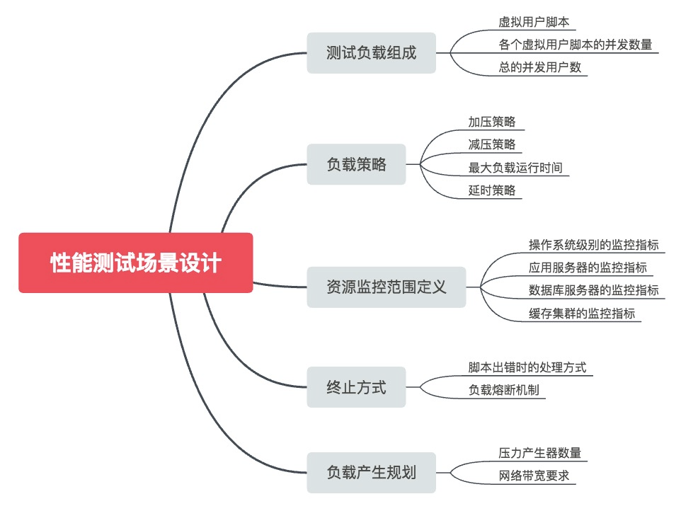

- 00 开篇词 从“小工”到“专家”，我的软件测试修炼之道.md.html
- 01 你真的懂测试吗？从“用户登录”测试谈起.md.html
- 02 如何设计一个“好的”测试用例？.md.html
- 03 什么是单元测试？如何做好单元测试？.md.html
- 04 为什么要做自动化测试？什么样的项目适合做自动化测试？.md.html
- 05 你知道软件开发各阶段都有哪些自动化测试技术吗？.md.html
- 06 你真的懂测试覆盖率吗？.md.html
- 07 如何高效填写软件缺陷报告？.md.html
- 08 以终为始，如何才能做好测试计划？.md.html
- 09 软件测试工程师的核心竞争力是什么？.md.html
- 10 软件测试工程师需要掌握的非测试知识有哪些？.md.html
- 11 互联网产品的测试策略应该如何设计？.md.html
- 12 从0到1：你的第一个GUI自动化测试.md.html
- 13 效率为王：脚本与数据的解耦 + Page Object模型.md.html
- 14 更接近业务的抽象：让自动化测试脚本更好地描述业务.md.html
- 15 过不了的坎：聊聊GUI自动化过程中的测试数据.md.html
- 16 脑洞大开：GUI测试还能这么玩（Page Code Gen + Data Gen + Headless）？.md.html
- 17 精益求精：聊聊提高GUI测试稳定性的关键技术.md.html
- 18 眼前一亮：带你玩转GUI自动化的测试报告.md.html
- 19 真实的战场：如何在大型项目中设计GUI自动化测试策略.md.html
- 20 与时俱进：浅谈移动应用测试方法与思路.md.html
- 21 移动测试神器：带你玩转Appium.md.html
- 22 从0到1：API测试怎么做？常用API测试工具简介.md.html
- 23 知其然知其所以然：聊聊API自动化测试框架的前世今生.md.html
- 24 紧跟时代步伐：微服务模式下API测试要怎么做？.md.html
- 25 不破不立：掌握代码级测试的基本理念与方法.md.html
- 26 深入浅出之静态测试方法.md.html
- 27 深入浅出之动态测试方法.md.html
- 28 带你一起解读不同视角的软件性能与性能指标.md.html
- 29 聊聊性能测试的基本方法与应用领域.md.html
- 30 工欲善其事必先利其器：后端性能测试工具原理与行业常用工具简介.md.html
- 31 工欲善其事必先利其器：前端性能测试工具原理与行业常用工具简介.md.html
- 32 无实例无真相：基于LoadRunner实现企业级服务器端性能测试的实践（上）.md.html
- 33 无实例无真相：基于LoadRunner实现企业级服务器端性能测试的实践（下）.md.html
- 34 站在巨人的肩膀：企业级实际性能测试案例与经验分享.md.html
- 35 如何准备测试数据？.md.html
- 36 浅谈测试数据的痛点.md.html
- 37 测试数据的“银弹”- 统一测试数据平台（上）.md.html
- 38 测试数据的“银弹”- 统一测试数据平台（下）.md.html
- 39 从小作坊到工厂：什么是Selenium Grid？如何搭建Selenium Grid？.md.html
- 40 从小工到专家：聊聊测试执行环境的架构设计（上）.md.html
- 41 从小工到专家：聊聊测试执行环境的架构设计（下）.md.html
- 42 实战：大型全球化电商的测试基础架构设计.md.html
- 43 发挥人的潜能：探索式测试.md.html
- 44 测试先行：测试驱动开发(TDD).md.html
- 45 打蛇打七寸：精准测试.md.html
- 46 安全第一：渗透测试.md.html
- 47 用机器设计测试用例：基于模型的测试.md.html
- 48 优秀的测试工程师为什么要懂大型网站的架构设计？.md.html
- 49 深入浅出网站高性能架构设计.md.html
- 50 深入浅出网站高可用架构设计.md.html
- 51 深入浅出网站伸缩性架构设计.md.html
- 52 深入浅出网站可扩展性架构设计.md.html
- 测试专栏特别放送 浅谈全链路压测.md.html
- 测试专栏特别放送 答疑解惑第一期.md.html
- 测试专栏特别放送 答疑解惑第七期.md.html
- 测试专栏特别放送 答疑解惑第三期.md.html
- 测试专栏特别放送 答疑解惑第二期.md.html
- 测试专栏特别放送 答疑解惑第五期.md.html
- 测试专栏特别放送 答疑解惑第六期.md.html
- 测试专栏特别放送 答疑解惑第四期.md.html
- 结束语 不是结束，而是开始.md.html
- 捐赠
30 工欲善其事必先利其器：后端性能测试工具原理与行业常用工具简介
你好，我是茹炳晟。今天我和你分享的主题是：工欲善其事必先利其器之后端性能测试工具原理与行业常用工具简介。
我在《聊聊性能测试的基本方法与应用领域》这个主题里介绍了七种测试方法，但不管是什么类型的性能测试方法，都需要去模拟大量并发用户的同时执行，所以性能测试基本都是靠工具实现。没有工具，性能测试将寸步难行。
所以，我今天就从后端性能测试的工具讲起，和你一起讨论它们的实现原理，以及如何用于后端的性能测试。另外，我还会和你分享一些中大型互联网企业选择的性能测试工具。
由于我今天要分享的知识点比较多，而且是相对独立的，所以我会采用问答的形式展开这些内容。我希望通过今天的分享，你能够对以下的问题和知识点有完整、清晰的理解与认识：
- 后端性能测试和后端性能测试工具之间的关系是什么？
- 后端性能测试工具和GUI自动化测试工具最大的区别是什么？
- 后端性能测试工具的原理是什么？
- 后端性能测试中，性能测试场景设计是什么意思，具体会涉及哪些内容？
- 业内主流的后端性能测试工具有哪些？
后端性能测试和后端性能测试工具之间的关系是什么？
后端性能测试工具是实现后端性能测试的技术手段，但是千万不要简单地把使用后端性能测试工具等同于后端性能测试，它只是后端性能测试中的一个必要步骤而已。
完整的后端性能测试应该包括性能需求获取、性能场景设计、性能测试脚本开发、性能场景实现、性能测试执行、性能结果报告分析、性能优化和再验证。
在这其中，后端性能测试工具主要在性能测试脚本开发、性能场景实现、性能测试执行这三个步骤中发挥作用，而其他环节都要依靠性能测试工程师的专业知识完成。
是不是感觉有点抽象，难以理解呢？我来做个类比吧。
假如你现在要去医院看病，医生会根据你对身体不适的描述，要求你先去验血，并确定需要检查的血液指标。验血是通过专业的医疗仪器分析你的血样，并得到验血报告。
医生拿到验血报告后，根据常年积累的专业知识，然后结合验血报告的各项指标以及指标之间的相互关系判断你的病情，并给出诊断结果以及相应的治疗措施。
同样的验血报告，如果给不懂医术的人看，就是一堆没有意义的数据；如果给一个初级医生看，他可能只能基于单个指标的高低给出可能的推测；但是，如果是给一个具有丰富临床经验的医生看，他往往可以根据这些指标以及它们之间的相互关系给出很明确的诊断结果。
现在，我把这个过程和性能测试做个类比，把性能测试对应到整个看病的过程：
- 需求获取对应的是你向医生描述身体不适细节的过程，医生需要知道要帮你解决什么问题；
- 设计性能场景对应的是医生决定需要检查哪些血液指标的过程；
- 使用性能测试工具对应的是使用医疗仪器分析血样的过程;
- 性能测试报告对应的就是验血报告;
- 性能测试人员分析性能结果报告的过程，对应的是医生解读验血报告的过程；
- 性能测试人员根据性能报告进行性能优化的过程，对应的是医生根据验血报告判断你的病情，并给出相应治疗措施的过程。
所以，在我看来使用性能测试工具获得性能测试报告只是性能测试过程中的一个必要步骤而已，而得出报告的目的是让性能测试工程师去做进一步的分析，以得出最终结论，并给出性能优化的措施。
后端性能测试工具和GUI自动化测试工具最大的区别是什么？
虽然后端性能测试工具和GUI自动化测试工具都是通过自动化的手段模拟终端用户使用系统的行为，但是两者实现的原理截然不同。
第一个显著区别是，模拟用户行为的方式。
GUI自动化测试工具模拟的是用户的界面操作，因此测试脚本记录的是用户在界面上对控件的操作；而性能测试工具模拟的是用户的客户端与服务器之间的通信协议和数据，这些通信协议和数据往往是用户在界面上执行GUI操作时产生的。
明白了这一点，你自然就能明白为什么录制虚拟用户性能测试脚本时，我们需要先选定录制协议了。
另外，正是由于脚本的模拟是基于协议的，所以我们才能比较方便地模拟成千上万并发用户同时使用系统的场景；否则，如果性能测试基于GUI发起，那我们就需要成千上万的浏览器同时执行用例，而这显然是不可能的。
第二个显著的区别是，测试的执行方式。
GUI自动化测试的执行，一般是单用户执行并验证功能结果；而性能测试的执行，往往需要同时模拟大量的并发用户，不仅需要验证业务功能是否成功完成，还要收集各种性能监控指标，会涉及到压力产生器、并发用户调度控制、实时监控收集等内容，所以性能测试的执行控制要比GUI自动化测试复杂得多。
这部分内容，我稍后在第32和33这两篇文章中详细展开。
后端性能测试工具的原理是什么？
虽然后端性能测试工具种类很多，但是由于都不能通过GUI的方式来模拟并发，所以其基本原理和主要概念基本一致。
首先，后端性能测试工具会基于客户端与服务器端的通信协议，构建模拟业务操作的虚拟用户脚本。对于目前主流的Web应用，通常是基于HTTP/HTTPS协议；对于Web Service应用，是基于Web Service协议；至于具体基于哪种协议，你需要和开发人员或者架构师确认，当然现在有些后端性能测试工具也可以直接帮你检测协议的种类。
我们把这些基于协议模拟用户行为的脚本称为虚拟用户脚本，而把开发和产生这些脚本的工具称为虚拟用户脚本生成器。
不同后端性能测试工具的虚拟用户脚本生成器，在使用上的区别比较大：比如，LoadRunner是通过录制后再修改的方式生成虚拟用户脚本；而JMeter主要是通过添加各种组件，然后对组件进行配置的方式生成虚拟用户脚本。
虽然LoadRunner也支持采用直接开发的方式产生虚拟用户脚本，但是因为开发难度太大，所以基本上都是采用先录制再开发的方式，不会直接去开发。另外，虽然JMeter也支持录制，但是JMeter的录制功能是通过设置代理完成的，而且录制出来的脚本都是原始的http请求，并没有经过适当的封装，所以录制功能比较弱。
虽然不同工具的使用方式各有特色，但其本质上都是通过协议模拟用户的行为。
然后，开发完成了虚拟用户脚本之后，后端性能测试工具会以多线程或多进程的方式并发执行虚拟用户脚本，来模拟大量并发用户的同时访问，从而对服务器施加测试负载。
其中，我们把实际发起测试负载的机器称为压力产生器。受限于CPU、内存，以及网络带宽等硬件资源，一台压力产生器能够承载的虚拟用户数量是有限的，当需要发起的并发用户数量超过了单台压力产生器能够提供的极限时，就需要引入多台压力产生器合作发起需要的测试负载。
一旦有了多台压力产生器，那就需要一个专门的控制器来统一管理与协调这些压力产生器，我们把这个专门的控制器称为压力控制器。压力控制器会根据性能测试场景的设计，来控制和协调多台压力产生器上的多线程或多进程执行的虚拟用户脚本，最终模拟出性能测试场景中的测试负载。
接着，在施加测试负载的整个过程中，后端性能测试工具除了需要监控和收集被测系统的各种性能数据以外，还需要监控被测系统各个服务器的各种软硬件资源。比如，后端性能测试工具需要监控应用服务器、数据库服务器、消息队列服务器、缓存服务器等各种资源的占用率。我们通常把完成监控和数据收集的模块称为系统监控器。
在性能测试执行过程中，系统监控器的数据显示界面是性能测试工程师最密切关注的部分，性能测试工程师会根据实时的数据显示来判断测试负载情况下的系统健康状况。
不同的后端测试工具中，系统监控器能力差别也比较大。比如，LoadRunner的系统监控器就很强大，支持收集各种操作系统的系统参数，还支持与SiteScope等第三方专业监控工具的无缝集成。
最后，测试执行完成后，后端性能测试工具会将系统监控器收集的所有信息汇总为完整测试报告，后端性能测试工具通常能够基于该报告生成各类指标的各种图表，还能将多个指标关联在一起进行综合分析来找出各个指标之间的关联性。我们把完成这部分工作的模块称为测试结果分析器。
需要强调的是，测试结果分析器只是按需提供多种不同维度和表现形式的数据展现工作，而对数据的分析工作，还是要依赖于具有丰富经验的性能测试工程师。
后端性能测试场景设计是什么意思，具体会涉及哪些内容？
性能测试场景设计，是后端性能测试中的重要概念，也是压力控制器发起测试负载的依据。
性能测试场景设计，目的是要描述性能测试过程中所有与测试负载以及监控相关的内容。通常来讲，性能测试场景设计主要会涉及以下部分：
- 并发用户数是多少？
- 测试刚开始时，以什么样的速率来添加并发用户？比如，每秒增加5个并发用户。
- 达到最大并发用户数后持续多长时间？
- 测试结束时，以什么样的速率来减少并发用户？比如，每秒减少5个并发用户。
- 需要包含哪些业务操作，各个业务操作的占比是多少？比如，10%的用户在做登录操作，70%的用户在做查询操作，其他20%的用户在做订单操作。
- 一轮虚拟用户脚本执行结束后，需要等待多长时间开始下一次执行？
- 同一虚拟用户脚本中，各个操作之间的等待时间是多少？
- 需要监控哪些被测服务器的哪些指标？
- 脚本出错时的处理方式是什么？比如，错误率达到10%时，自动停止该脚本。
- 需要使用多少台压力产生器？
以上这些场景组合在一起，就构成了性能测试场景设计的主要内容。也就是说，性能测试场景会对测试负载组成、负载策略、资源监控范围定义、终止方式，以及负载产生规划作出定义，而其中的每一项还会包含更多的内容。具体请参见如图1所示的思维导图。

图1 性能测试场景的设计
业内主流的后端性能测试工具有哪些？
目前，业内有很多成熟的后端性能测试工具，比如传统的LoadRunner、JMeter、NeoLoad等。另外，现在还有很多云端部署的后端性能测试工具或平台，比如CloudTest、Loadstorm、阿里的PTS等。
其中，最为常用的商业工具是HP软件（现在已经被Micro Focus收购）的LoadRunner，由于其强大的功能和广泛的协议支持，几乎已经成了性能测试工具的代名词。大量的传统软件企业，也基本都使用LoadRunner实施性能测试，所以我在后面分享企业级服务器端性能测试的实践时，也是以LoadRunner为基础展开的。
另外，JMeter是目前开源领域最主流的性能测试工具。JMeter的功能非常灵活，能够支持HTTP、FTP、数据库的性能测试，也能够充当HTTP代理来录制浏览器的HTTP请求，还可以根据Apache等Web服务器的日志文件回放HTTP流量，还可以通过扩展支持海量的并发。
然后，再加上JMeter开源免费的特点，已经被很多互联网企业广泛应用。比如，饿了么就是使用JMeter来完成系统的全链路压力测试。
其实，传统软件企业偏向于使用LoadRunner，而互联网企业普遍采用JMeter，是有原因的。
LoadRunner License是按照并发用户数收费的，并发用户数越高收费也越贵，但是LoadRunner的脚本开发功能、执行控制、系统监控以及报告功能都非常强大，易学易用。
而传统软件企业，需要测试的并发用户数并不会太高，通常是在几百到十几万这个数量级，而且它们很在意软件的易用性和官方支持能力，所以往往热衷于直接选择成熟的商业工具LoadRunner。
但是，互联网企业的并发用户请求数量很高，很多软件都会达到百万，甚至是千万的级别。那么，如果使用LoadRunner的话：
费用会高的离谱；
LoadRunner对海量并发的测试支持并不太好；
很多互联网企业还会有特定的工具需求，这些特定的需求很难在LoadRunner中实现，而在开源的JMeter中，用户完全可以根据需求进行扩展。
所以互联网企业往往选用JMeter方案，而且通常会自己维护扩展版本。
总结
今天，我以问答的形式，和你分享了后端性能测试的理论，以及工具使用的问题。
首先，我和你解释了后端性能测试和后端性能测试工具之间的关系。在我看来使用性能测试工具获得性能测试报告，只是性能测试过程中的一个必要步骤而已，而得出报告的目的是让性能测试工程师去分析并给出性能优化的措施。
然后，我解释了后端性能测试工具和GUI自动化测试工具最大的区别，即它们模拟用户行为的方式以及测试的执行方式不同。
接着，我介绍了后端性能测试工具的基本原理。它首先通过虚拟用户脚本生成器生成虚拟用户脚本；然后根据性能测试场景设计的要求，通过压力控制器控制协调各个压力产生器以并发的方式执行虚拟用户脚本；同时，在测试执行过程中，通过系统监控器收集各种性能指标以及系统资源占用率；最后，通过测试结果分析器展示测试结果数据。
最后，我介绍了性能测试场景设计，并分析了业内主流的后端性能测试工具LoadRunner和JMeter，以及传统软件企业和互联网企业在选择后端性能测试工具时的考量。
思考题
除了我今天提到的后端性能测试工具外，你还接触过哪些后端性能测试工具？这些后端性能测试工具中又有哪些好的设计呢？
感谢你的收听，欢迎你给我留言。
© 2019 - 2023 Liangliang Lee. Powered by gin and hexo-theme-book.